The Reviewer is a staff role. It receives the applications that the applicants send for review and starts their review. This section shows the pages of the Reviewer and, most important, how to set an application as review started.
The Reviewer signs in with the same sign in page as the applicant (Section 1). The first page is Application For Review. It has the card Building Permit, with a switch, a search box and a number in a blue circle that counts the applications waiting. Click Scan QR at the top right to open an application by scanning its QR code.
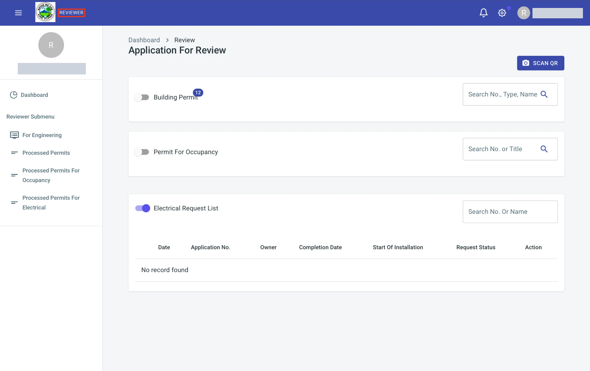
Click the switch of Building Permit to show the building permit applications that are waiting for review. Type a number, a type or a name in the search box to find one. Click the arrows beside Date and Owner to sort the list.
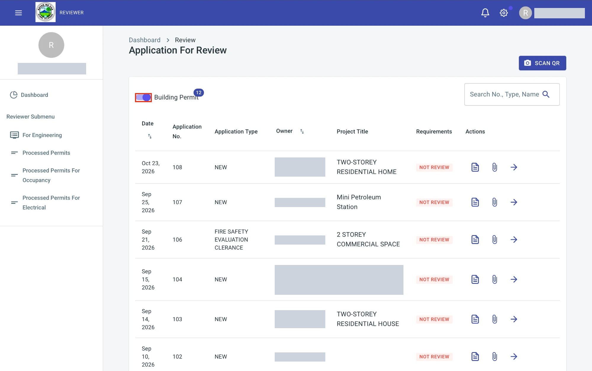
The column Requirements shows whether the requirements of the application are reviewed. NOT REVIEW means that the review is not started yet. The column Actions has three icons:
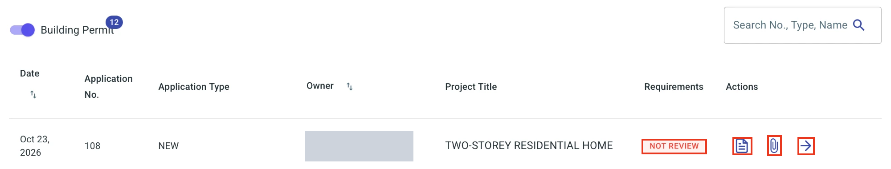
The sidebar has the Dashboard and, under Reviewer Submenu, two pages. Click an item to open its page.
The page Building Permit For Engineering lists the applications that are with the engineering office. It has a search box and the columns Date, Application No., Application Type, Application Status, Owner and Actions.
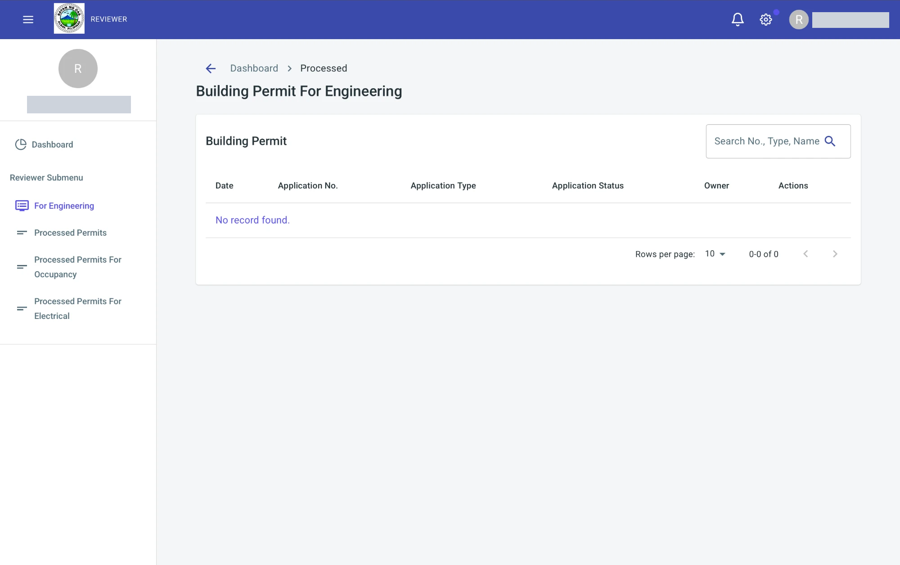
The page Processed Building Permit lists the applications that you already processed. Its icons open the same pages as the icons of the Dashboard. Type a number or a name in the search box to find one.
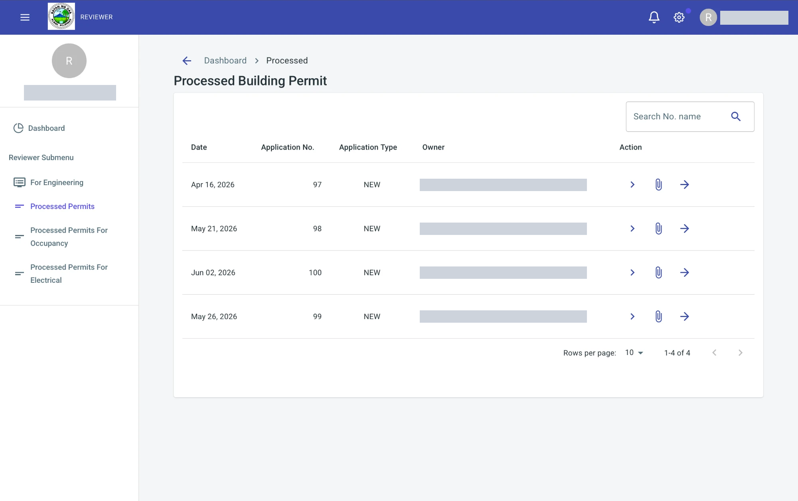
Click the document icon of an application to read it. The page shows the Unified Application Form for Building Permit exactly as the applicant filled it in: the type of application, the owner, the location, the scope of work, the use of the building, the size and the costs, the full time inspector, and the notary section. Box 6 is for the fees. It says No assessment found. until the fees are assessed.
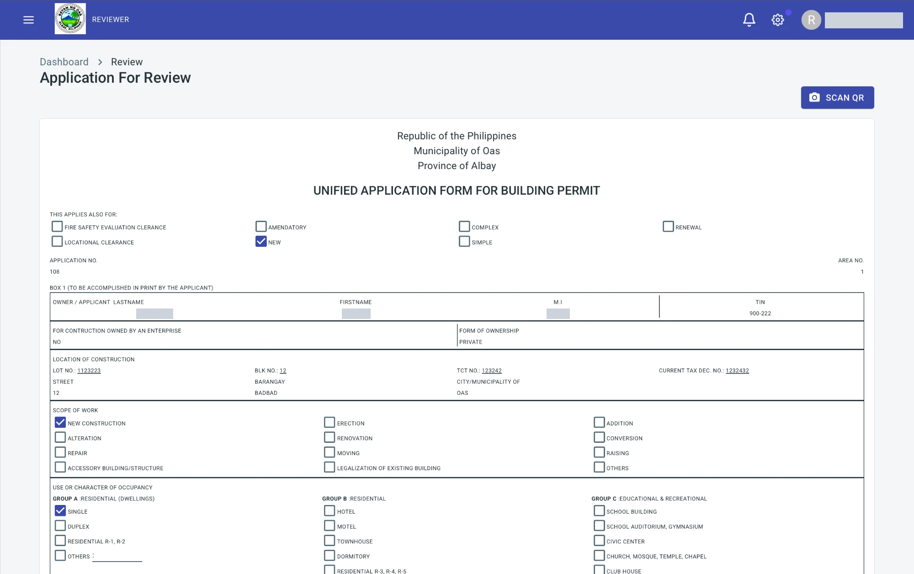
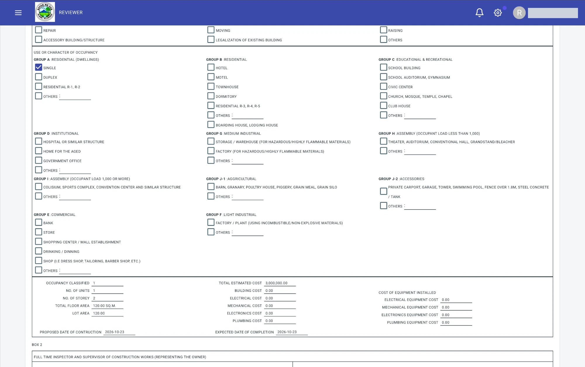
At the bottom of the form are three buttons:
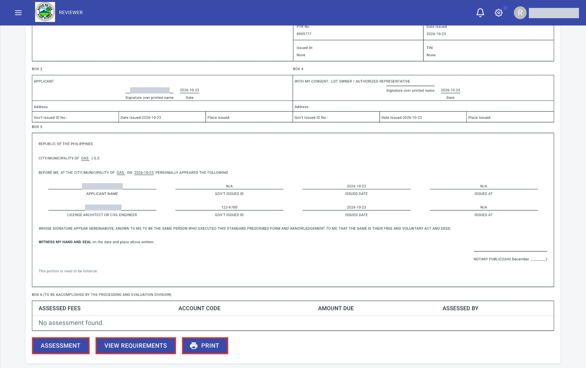
Click the paperclip icon of an application, or View Requirements on the form, to open the page Application Requirements. It has the same six groups as the requirements of the applicant: Forms, Plans, Technical Documents, PRC IDs & PTRs, Personal Documents and Certifications. Click a group to show its requirements. The green tag 1 FILES UPLOADED shows how many files the applicant uploaded. The button View Files opens them. A requirement with no file shows NO FILES and its button is dimmed. At the top right are two buttons:
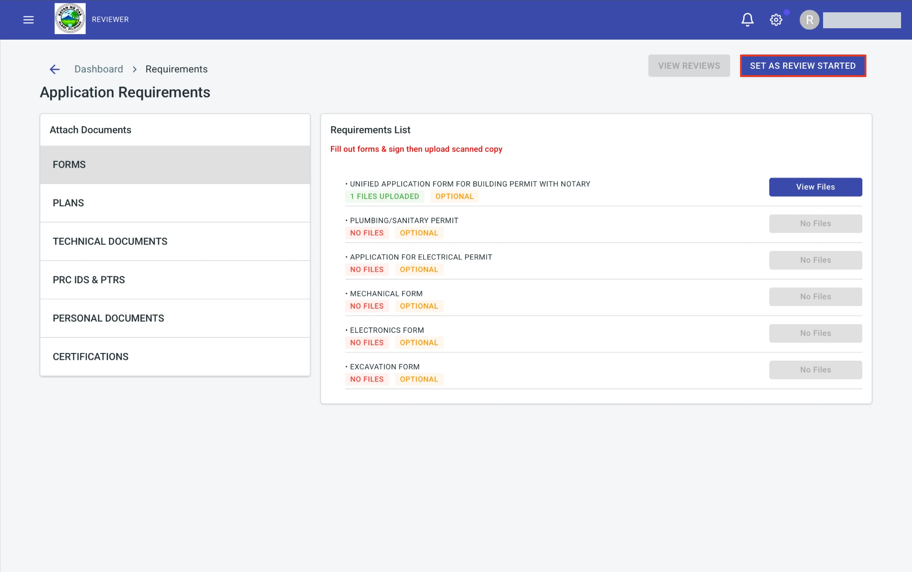
Click View Files to open the files of a requirement. Click the name of a file to open it.
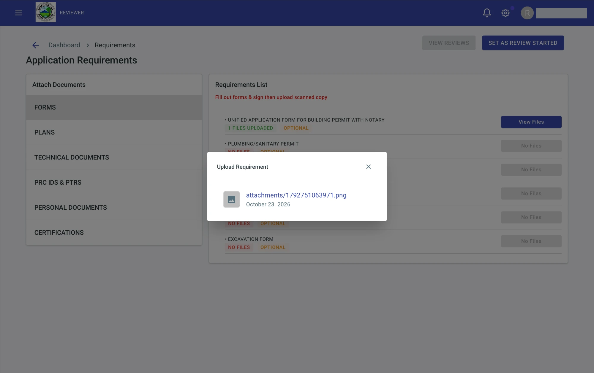
Click Set As Review Started. The message Application status successfully set to review started. appears. Both buttons are then dimmed, so the review cannot be started twice. The status of the application becomes under review.
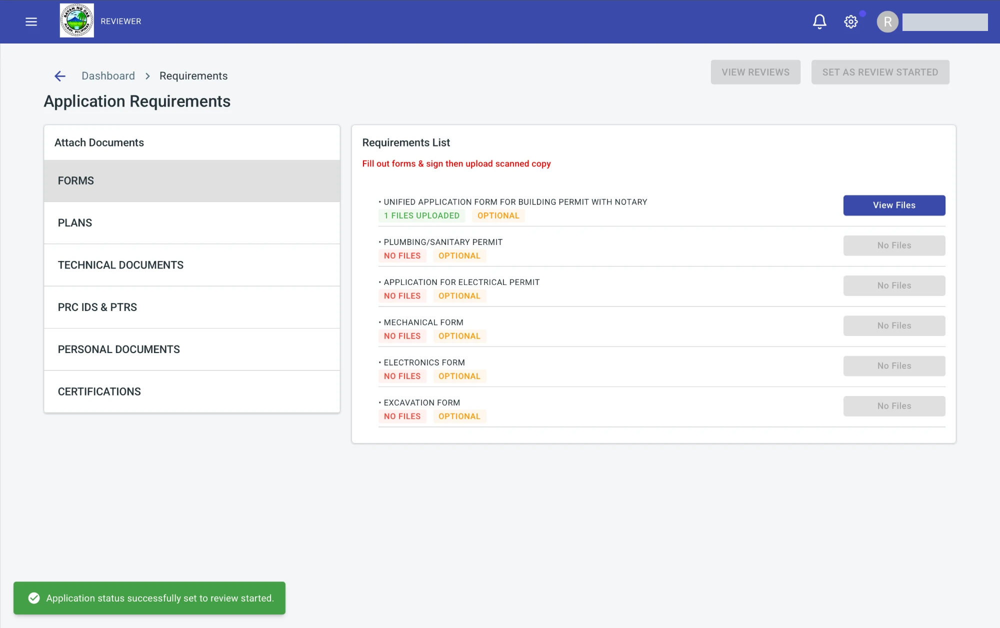
Click the arrow icon of an application to open Building Permit Remarks. It shows the remarks that the offices wrote about the application, with the Date, the office in Process From, the Remarks and the Status. When there is none, it says No remarks found. Click the X to close it.
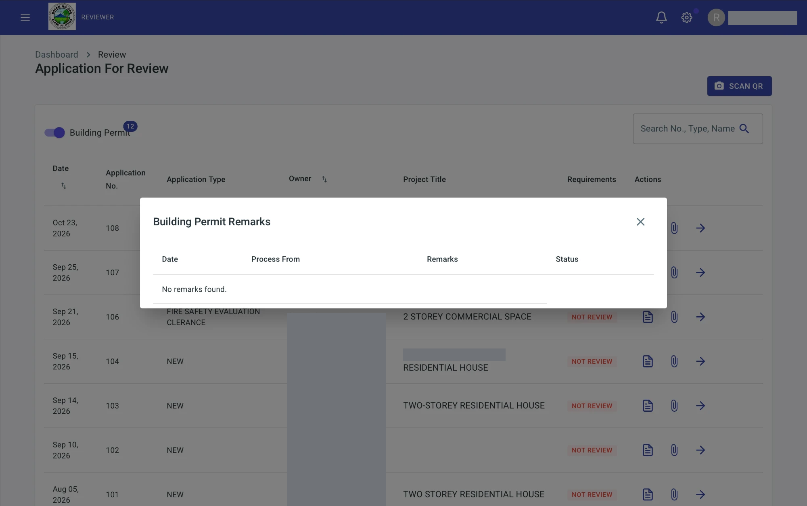